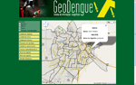

Freelance, Personal and Other Projects
Some of the projects on which I have worked, showcasing some of their features and employed technologies.
Professional (Freelance projects)
Academic Control System - CESREI College
2006 - 2014
CESREI College has more than a thousand students, and this system managed all of their academic information. It provided controls on the information of the college's courses, students, professors, employees, disciplines, schedules, payments and payroll. Most of everyday tasks in the college was done on this system for eight years, and it was crucial for the college functioning through this time. I used PHP and MySQL, and the interface was made with HTML and CSS only.
FLOApp (Free/Livre/Open Applications)
 2010
2010
Cooperative environment to manage open source projects that focus on public management, developed by the software company Inteligis. I worked mainly on the creation of SOAP web services (made in PHP) to provide comunication between FLOApp and FusionForge (an open source system that comprehends management for projects, tasks, releases, discussion boards, etc.). I worked also on the installation and configuration of the web servers (Apache and Tomcat), with PHP 5 and PostgreSQL, using Linux.
Information System - PROPEX - UFCG
 2009 - 2010
2009 - 2010
Fully created and developed by me from scratch, this system was built to provide better control to UFCG Dean's Office for Research and Extension (PROPEX) over research/extension projects and its students. I used MySQL database, PHP for the back-end, and HTML, CSS and Javascript, for a richer front-end. Users had individual cryptographed password, and different privileges on the system, according to their role.
Web Site - CESREI College
2004 - 2010
I created and developed this site not only to make publicity of the college, but also to improve interaction with students and professors. It was a dynamic portal, with an administration area to insert news, notices, polls, calendar, official announcements and admission test results. It also gave students and professors individual access, through password. Professors published students grades, files for their classes and sent it directly to the college's academic administration (professor's area shown on the second image). Students had access to the grades and files published by their professors, also to their academic record and schedule. Everything was developed with PHP, Flash, HTML/CSS and Javascript, and used MySQL database. The layout had 3 different color schemes and 8 different top images (photos of important spots of our city), that were loaded randomly, so there were 24 different visuals to the pages.
Web Site - CERC School
2002 - 2006
This was my first project, the one that got me started into programming. CERC was a medium-sized school, with around 400 students at the time. I created the complete web site for the school, using PHP, Flash and HTML/CSS, to get a colorful and very animated interface. It featured news, articles, polls, message board, and, the main feature, access to students grades (as you can see on the second image). This was made with MySQL database. CERC was the first school on the city to provide this service to students and their parents, back in 2002.
Personal projects and other
Barzin
2011 - 2012
This one was a project for a discipline in my graduation, and consisted of a system to promote interaction in restaurants and bars, with Android tablets on the tables. The establishment manager had power to insert the menu on the system, on a web interface, and the clients would browse on this menu and place orders. On the tablet, it was possible to divide every order (and the bill as a whole) to every person, so everyone would know how much was their share. Also, the client could chat with other tablets. There was 3 people on the team of this project, and we used Java, PHP, HTML/CSS, Javascript, AJAX and MySQL database.
Barzin Mobile
 2012
2012
This was done by myself, for applying the idea of Barzin (mentioned before) for mobile devices, such as smartphones. It is a web app through which the user could browse the restaurant's menu, place orders (splitting them by person, simplifying the tab split), include tip, call a waiter, and much more. The HTML5 interface was done entirely using jQuery Mobile and PHP.
Geodengue

2011
Project developed for the discipline Geographic Information Systems, it consisted of a gIS that controlled, over a city map, public health agents and epidemic focuses of dengue, a disease that inflicts hundreds of thousands of people in our region and country. The system was built by a team of 5 members, and used GWT, Java, Geoserver, PostgreSQL database with the Postgis extension, to handle spatial data and queries, all over a Google Maps layer.
Noeh
2015
System for registering members in my church, organizing all personal information (like contact info, talents and skills) and participation in several groups (this is Noah's ark, there is room for everyone). I also built a mobile version in HTLM5, to facilitate access. The back-end is in Ruby on Rails, with image manipulation using ImageMagick, storage in Dropbox and Google Drive, integration with Facebook API. I also had contact with Amazon Web Services and Digital Ocean.
Information System - Restauração
2012
A pet project of mine, it is an information system to Restauração, a musical group I'm in (and play the bass!). It records every event we play and every music, with important information to us, so we can consult whenever we have to, through smartphones, notebooks or mobile devices. It features a login system through Facebook, to allowed users (restricted by me). It also notifies everyone when we have scheduled dates. I used PHP, HTML/CSS, Javascript, AJAX requests, jQuery effects and PostgreSQL database.
 View PDF
View PDF
 2010
2010 2009 - 2010
2009 - 2010


 2012
2012 joao@jpribeiro.com.br
joao@jpribeiro.com.br
 linkedin.com/in/joaopribeiro
linkedin.com/in/joaopribeiro
 @joaopribs
@joaopribs
 Belo Horizonte, Brazil
Belo Horizonte, Brazil


{kind=link}
{kind=link}
{kind=link}
{kind=link}
{kind=link}
{kind=link}
{kind=link}